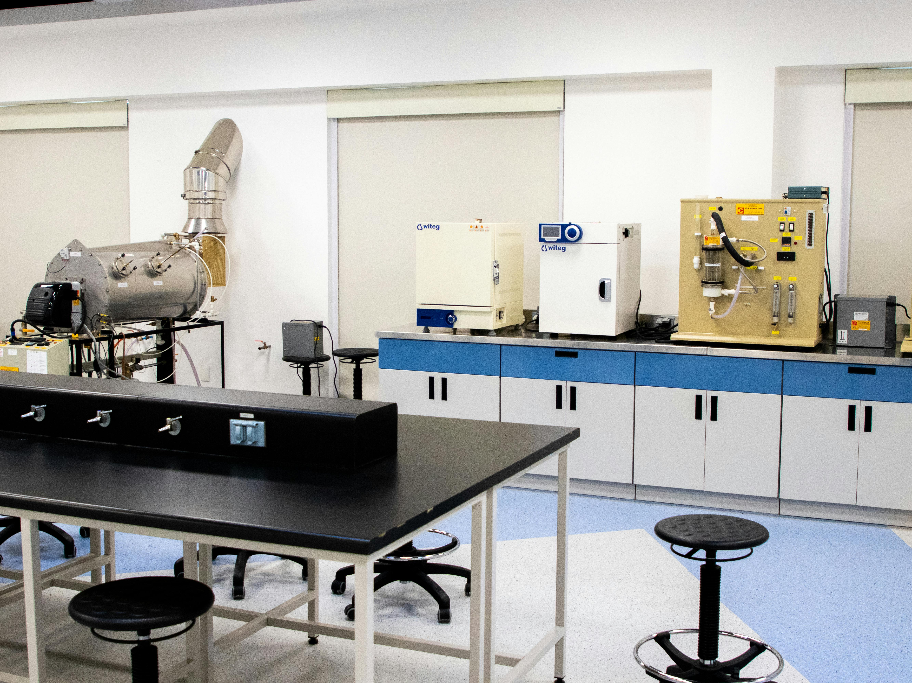
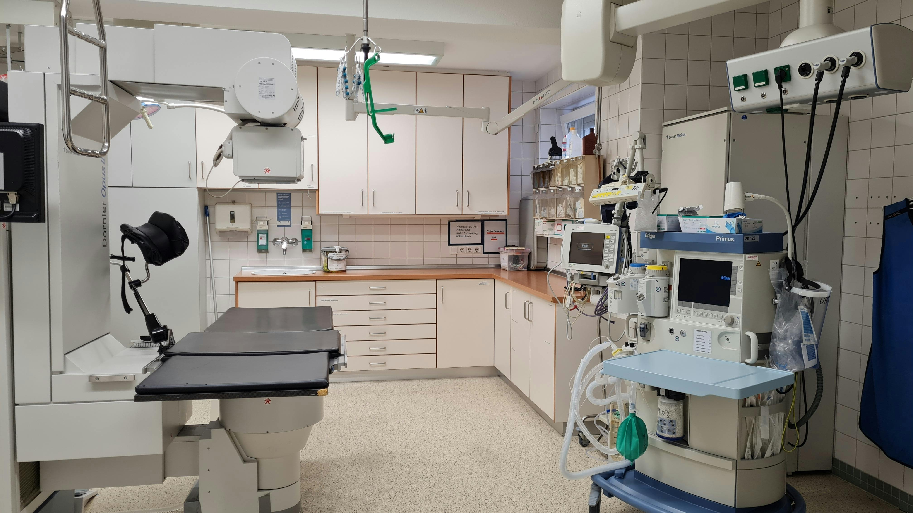
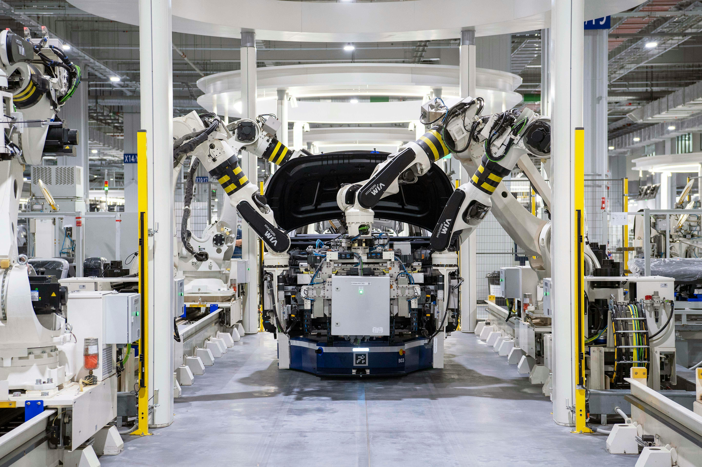

Covering Six Core Sectors
From wafer-level metrology and space optics to GMP cleanroom qualification and battery electrochemistry — ZYGO, TSI, and AMETEK cover the measurement and analysis stack alongside Yixi's local application support.

Semiconductor Manufacturing
Laser interferometers and optical profilers measure wafer flatness, thin film thickness, and microstructure topography, providing nanometer-level quality control for chip fabrication, photomask inspection, and etch depth analysis.
Aerospace & Defense
Extremely demanding precision requirements are met by optical elements and interferometers used in satellite optical systems, airborne cameras, and space telescopes — ensuring reliable performance in extreme environments.

Scientific Research
Universities and research institutions use optical profilers and laser interferometers for precision optical experiments, new material surface analysis, and optical system R&D — essential tools from fundamental physics to applied optics.

Pharmaceutical & Cleanroom Monitoring
Grade A/B zones and aseptic lines must meet GMP and ISO expectations for viable and non-viable monitoring. TSI AeroTrak™+ remote particle counters and Scanning Mobility Particle Sizer™ spectrometers support continuous environmental monitoring, qualification, and traceable data for sterile processes — and extend to electronics-grade fabs and high-control R&D labs.
New Energy
For perovskite and silicon photovoltaics, batteries, and advanced electrodes, Princeton Applied Research and Solartron Analytical electrochemical platforms deliver CV, EIS, galvanostatic cycling, and photoelectrochemical methods to probe charge transfer, interfacial kinetics, and side reactions — supporting efficiency, cycle life, and lot-to-lot consistency in materials and process development.

Precision Manufacturing
Optical measurement systems provide in-line process monitoring and final inspection — from precision bearings to optical lenses, from MEMS to precision molds — ensuring manufactured precision meets design specifications.